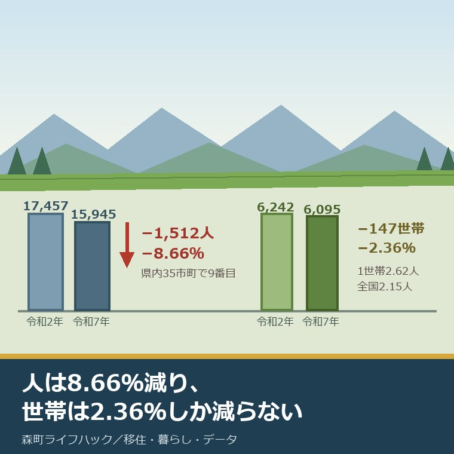
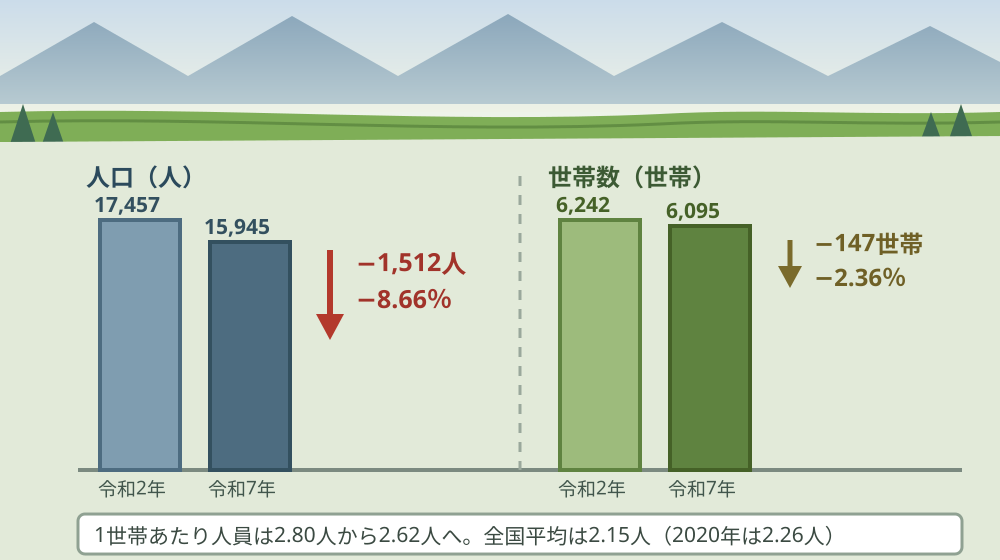
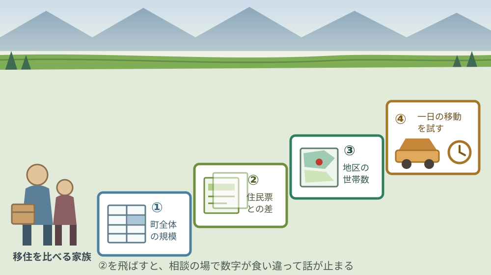

森町の人口、国勢調査の速報値で見る｜2025年10月1日現在

この記事の要点
Q. 移住先として森町を見ています。人口はいま何人で、どのくらいのペースで減っているのでしょうか。
A. 令和7年国勢調査の速報値で、森町は15,945人・6,095世帯です。令和2年から1,512人・8.66％減で、県内35市町のうち減少率の大きいほうから9番目。隣の掛川市2.86％減、袋井市1.44％減の2倍から6倍のペースです。まず住民基本台帳の数字と分けて読んでください。
静岡県周智郡森町（遠州森町）を移住先の候補として見ている。町の規模と、減り方を数字で確かめたい。この記事は、そういう方に向けて書いています。
森町の人口を調べると、二つの数字が出てきます。16,422人と15,945人です。どちらも公表された正しい数字で、しかし出どころが違います。
今日は2026年8月23日。令和7年国勢調査の人口速報集計結果が公表されたのは2026年5月29日で、静岡県の統計担当課のページが更新されたのは2026年7月29日です。市町別の数字が県の資料として並んだのは、この2か月ほどの間の話です。
先に結論を書きます。森町の減り方は、遠州の平野部の市とは別の水準にあります。そして減っているのは人だけではありません。
順に、公表されている内容から並べます。数字を並べたあとで、それが1世帯あたり・1平方キロあたりどうなるかを計算します。
公式情報から確定できること
2026年8月23日時点で、静岡県公式と総務省統計局、そして森町公式から確認できたことを並べます。出典は記事の末尾に載せています。
一つ目。森町の人口は15,945人です。静岡県公式の「令和7年国勢調査 静岡県の人口（速報値）」の表1によれば、2025年10月1日現在で男7,971人・女7,974人。女性のほうが3人多い数字です。
二つ目。森町の世帯数は6,095世帯です。同じ表に載っています。人口と世帯数が同じ基準日で並んでいるので、割り算ができます。
三つ目。令和2年からの減少は1,512人です。同じ表によれば、令和2年国勢調査の確定値は17,457人（男8,699人・女8,758人）。増減率は8.66％減です。
四つ目。世帯数も147世帯減っています。令和2年の6,242世帯から6,095世帯へ、2.36％減です。人口だけでなく世帯も減っている点が、この5年の特徴です。
五つ目。静岡県全体は3,468,845人です。同じ表によれば、令和2年から164,357人減、4.52％減。一方で県の世帯数は1,501,036世帯で、17,564世帯・1.18％の増加です。
六つ目。全国の人口は1億2305万人です。総務省統計局の令和7年国勢調査 人口速報集計結果によれば、2020年から309万7千人減、2.5％減（年平均0.50％減）。減少幅は前回より拡大しています。
七つ目。県内35市町は、すべて人口が減っています。表1に載る35市町のうち、増えた市町はありません。減少率が最も小さいのは長泉町の0.18％減です。
八つ目。森町は減少率の大きいほうから9番目です。私が表1の35市町を減少率で並べ替えたところ、森町の8.66％減は9番目にあたりました。
九つ目。森町より減り方が大きい8市町の内訳は、はっきりしています。川根本町14.31％減、西伊豆町14.16％減、松崎町13.37％減、下田市11.19％減、南伊豆町11.07％減、東伊豆町10.99％減、河津町10.63％減、伊豆市8.67％減。伊豆半島の7市町と、大井川上流の川根本町です。
十番目。同じ遠州の市とは、水準が違います。表1によれば、掛川市2.86％減、袋井市1.44％減、磐田市3.67％減、浜松市3.16％減、湖西市4.62％減、菊川市4.72％減です。
十一番目。浜松市天竜区は11.46％減です。同じ表の区別の数字によれば、天竜区は26,726人から23,662人へ。森町の北隣にあたる山側の区が、森町より大きく減っています。
十二番目。世帯が減った市町は35のうち18です。私が表1を数えたところ、世帯数が減ったのは18市町、増えたのは17市町でした。森町は減った側に入ります。
十三番目。森町の世帯減少率は、35市町のうち10番目です。2.36％減。川根本町7.43％減、西伊豆町8.00％減が上位で、掛川市は3.76％増、袋井市は4.69％増です。
十四番目。全国の1世帯当たり人員は2.15人です。総務省統計局によれば、2020年の2.26人から減っています。全ての都道府県で減少しました。
十五番目。森町公式の数字は別にあります。森町公式の月別人口によれば、2026年8月1日現在の人口は16,422人（男8,213人・女8,209人）、世帯数は6,763世帯です。
十六番目。速報値は確定値ではありません。総務省統計局は「後日公表する人口及び世帯数の確定数は、調査票の記入内容に基づいた審査を経て集計・公表するため、それとは必ずしも一致しない」と明記しています。
十七番目。森町の面積は133.91平方キロメートルです。森町公式の町のプロフィールによれば、東西13キロメートル、南北24キロメートル、標高は最高941.0メートル・最低15.4メートルです。

この絵で描きたかったのは、二本の棒の下がり方が違うという点です。人は8.66％減り、世帯は2.36％しか減っていません。つまり、1軒あたりに住む人が減りました。不動産の目で見ると、これは空き家より前の段階の話です。
森町の暮らしに置き換えると、1世帯あたり何人か
ここからは、公表された数字を割り戻します。私の計算であることを先に断っておきます。
令和7年の15,945人を6,095世帯で割ります。1世帯あたり2.62人。令和2年は17,457人を6,242世帯で割って2.80人でした。5年で0.18人減っています。
この2.62人という数字を、全国と並べます。全国平均は2.15人ですから、森町は0.47人多い。親と子が同じ家にいる世帯が、まだ相当数残っているということです。
これは移住を考える側には、良い情報にも悪い情報にもなります。良い面は、地区の行事や見守りが世帯の人数で回っていること。難しい面は、空き家として市場に出てくる家がまだ少ないことです。
人口密度も出します。15,945人を133.91平方キロメートルで割ると、1平方キロあたり119.1人。令和2年は130.4人でしたから、5年で11人ほど薄くなりました。
ただし森町の面積は、山が大部分です。この密度は町全体をならした数字で、森の市街地に立ったときの体感とは違います。地区ごとの差を見る話は、別の記事に譲ります。
次に、二つの数字の差を見ます。住民基本台帳の16,422人と、国勢調査の15,945人。差は477人です。世帯数は6,763世帯と6,095世帯で、差は668世帯もあります。
基準日が10か月違うので、単純な引き算ではありません。それでも世帯数の668という差は、10か月の増減では説明が付かない大きさだと私は考えています。国勢調査は住民票ではなく、実際に住んでいるかで数えるためです。
この差は、移住を考える方には実務的な意味を持ちます。住民票が森町にあって、実際には町外に住んでいる世帯が一定数ある。その多くは、進学や就職で出た子と、施設に入った親の世帯だと私は見ています。
地区ごとの人口の見方については、別の記事で整理しました。データを結論ではなく入口として使う考え方は、人口データの読み方をまとめた記事に書いています。
良い点：この速報値の、よくできているところ
まず、この公表のよくできているところを数えます。批判の前に置くのが、私の書き方の順番です。
一つ目。市町別の表を、一つのファイルで出しています。静岡県公式の表1は、35市町と政令市の区を1枚の表に収めています。県内の他の町と自分で比べられる形です。
二つ目。人口と世帯数を同じ表に並べています。片方だけでは分からないことがあります。世帯が減っているかどうかは、住まいの話に直結します。
三つ目。増減数と増減率の両方が入っています。1,512人減と8.66％減の両方が書いてあるので、規模の違う市町と並べても意味が保てます。
四つ目。速報値であることを明示しています。総務省統計局は、確定数と一致しない場合があると先に書いています。数字の性格を隠していません。
五つ目。境域の組み替えに触れています。同じ資料は、増減の計算で用いた令和2年の人口を令和7年の境域に組み替えたと注記しています。市町村合併があっても比較が成り立つようにしてあります。
注文したい点：この数字だけでは埋まらないところ
その上で、一事業者として注文したい点を並べます。統計の担当も限られた人数で動いていることは承知の上です。
一つ目。速報値には年齢の内訳がありません。15,945人が何歳の層で減ったのかは、この表からは読めません。移住を考える家族が一番知りたいのは、同世代が何人いるかです。
二つ目。町丁字別の数字が出ていません。森町の中でも、市街地と山側では話が違います。地区別が出るのは確定値の後で、それまでは住民基本台帳の町名別統計表で代用することになります。
三つ目。住宅の数が出ていません。世帯数は分かっても、空き家を含む住宅の総数は速報値の対象外です。家が余っているかどうかは、この表からは判断できません。
四つ目。確定値の公表時期が、県のページからは分かりませんでした。いつ差し替わるかが書いてあれば、読む側は「今は速報で見ておく」と決められます。
五つ目。町の側の説明が追いついていません。森町公式の月別人口のページは住民基本台帳の数字で、国勢調査の速報値には触れていません。一事業者としては、両方を並べた1ページがあると助かります。

対案・結論：今日、移住先を比べている人が確かめられること
結論を急がないと決めたうえで、今日から動ける順番を書きます。順番はイラストのとおりです。
| 順番 | 確かめること | 確認先 |
|---|---|---|
| 1 | 町全体の規模と減少率 | 静岡県公式「令和7年国勢調査 静岡県の人口（速報値）」表1 |
| 2 | 住民基本台帳の最新値との差 | 森町公式「森町の月別人口」。担当は住民生活課住民係 0538-85-6312 |
| 3 | 候補の地区に何人住んでいるか | 同ページの町名別人口統計表・行政区別人口統計表（PDF） |
| 4 | 比べたい市町の減少率 | 同じ表1の35市町。掛川市・袋井市・磐田市の行と並べる |
| 5 | 1世帯あたり人員が何人か | 人口÷世帯数を自分で計算。全国平均2.15人と比べる |
| 6 | その地区の家が、実際に出ているか | 森町空き家・空き地バンク。定住推進課移住交流係 0538-85-6321 |
1は、今日できます。県の表1をひらいて、森町の行を見るだけです。15,945人・6,095世帯・8.66％減。この3つを控えれば、他の町と比べられます。
2も今日できます。森町公式の月別人口と並べて、二つの数字を書き留めてください。移住相談の場で数字が食い違ったときに、慌てずに済みます。
3は、地区を決めている方に効きます。町名別人口統計表を見れば、候補の大字に何世帯あるかが分かります。町全体の数字より、こちらのほうが暮らしに近い。
4は、比較の作業です。森町だけを見ると、減っていることしか分かりません。掛川市2.86％減、袋井市1.44％減と並べて初めて、差が何を意味するかを考えられます。
5と6は、住まいの話です。世帯が減っている町では、いずれ家が出てきます。ただし今すぐではありません。バンクの公開件数を見れば、その速さが分かります。
森町の中心部だけを見て判断すると、町全体を読み違えます。その理由は中心部と周辺部の見え方の違いを整理した記事に書きました。
地区の輪郭そのものを先に掴みたい方には、別の記事があります。森町を六つの地区に分けて見る方法は六つの地区から森町を見た記事にまとめています。
家族に残す記録
ここからは、確認した内容を紙1枚に残すための項目です。次に調べる人が同じ手間をかけないためのものです。
書き留めるのは、国勢調査の速報値（人口・世帯数・基準日）、住民基本台帳の値と基準日、候補の地区の世帯数、比べた市町の減少率、1世帯あたり人員です。この5つで、家族の間の会話が具体になります。
あわせて、森町の住民生活課住民係の電話番号（0538-85-6312）、定住推進課移住交流係の電話番号（0538-85-6321）、静岡県の統計担当課の電話番号（054-221-2995）、確認した日付を並べておきます。
数字が揃ったら、次は住所の選び方です。地区名より通勤・買い物・災害地図を重ねる考え方は森町の住所選びについて書いた記事にまとめました。
実家の名義、境界、農地、道路まで含めて順に整理したい方は、ふじがおか実家カルテの森町相談窓口もご利用ください。住所が分かれば、建物と敷地のどちらについても、確認する順番を整理できます。
大石の視点
ここからは、私（大石浩之）の個人の考えです。公的な事実とは分けてお読みください。私が森町の国勢調査の現場に関わった体験があるわけではありません。以下は、公表資料を不動産の目で読んだ私の見方です。
私は数字を見るとき、必ず割り戻します。15,945人では、誰も動きません。1世帯あたり2.62人、5年で0.18人減、1平方キロあたり119人。ここまで割って、初めて話ができます。査定の場でやっているのと同じ作業です。
その目で見ると、この記事でいちばん重い数字は8.66％減ではありません。人口が8.66％減ったのに、世帯は2.36％しか減っていないという差のほうです。この差が、これから空き家になる家の予備軍です。
理由は単純です。3人で住んでいた家に2人が残り、やがて1人になる。その間、世帯数は1のままです。世帯が消えるのは最後の1人が動いたときで、そこで初めて家が市場に出ます。
だから、いま森町で家を探しても選択肢が少ないのは当然だと私は考えています。減っているのは人で、家はまだ動いていません。この時間差が、移住を考える側にとっては待ち時間になります。
もう一つ、私が引っかかったのは住民基本台帳との668世帯の差です。住民票は森町にあるが、そこには住んでいない世帯が相当数ある。私の商売で言えば、これは実家の名義人が町外にいる家です。
そういう家は、相談が来るのが遅くなります。親が施設に入っても住民票は動かさない。子は町外にいる。誰も傷みに気づかない。年に一度、盆に帰ったときに雨漏りが見つかる形になります。
ここは正直に書きます。森町の8.66％減という数字を、私は「危ない」と読むべきか「これから動く」と読むべきか、まだ決めかねています。県内で9番目に大きい減り方であることは事実です。一方で、伊豆半島の7市町と川根本町を除けば、森町は本土側で最も減っている町でもあります。この位置づけを、悲観の材料にも、余白の材料にも読めてしまう。
それでも一つだけ言い切ります。移住先を比べるときは、人口の数字より世帯の数字を見てください。人口は町の規模を教えますが、世帯は住まいの需給を教えます。家を探す側に効くのは後者です。
森町の可能性は、まだ十分に残っていると私は見ています。1世帯あたり2.62人という数字は、全国平均より0.47人多い。地区の行事も見守りも、まだ人の頭数で回っている町だということです。
ただし、その前提は5年ごとに薄くなります。2.80人から2.62人へ。次の調査で2.45人を割ると、地区の当番の回り方が変わります。そのとき効くのは、今のうちに関わり方を決めておいた家だと私は考えています。
結論が保留のままでも、確認済みの事実が一つ増えたなら、それは前進です。町の規模が分かった。減る速さが分かった。どちらも、次の判断を軽くします。
まとめ
- 静岡県公式の令和7年国勢調査速報値によれば、森町の人口は15,945人（男7,971人・女7,974人）、世帯数は6,095世帯（2025年10月1日現在／2026年8月23日確認）
- 令和2年の確定値は17,457人・6,242世帯で、人口は1,512人減（8.66％減）、世帯数は147世帯減（2.36％減）
- 静岡県全体は3,468,845人で164,357人減（4.52％減）、世帯は1,501,036世帯で17,564世帯増（1.18％増）
- 総務省統計局によれば、全国の人口は1億2305万人で309万7千人減（2.5％減・年平均0.50％減）
- 県内35市町はすべて人口が減っており、減少率が最も小さいのは長泉町の0.18％減
- 私が表1を並べ替えた結果、森町の8.66％減は減少率の大きいほうから9番目
- 森町より減少率が大きい8市町は、川根本町14.31％減と伊豆半島の7市町（西伊豆町・松崎町・下田市・南伊豆町・東伊豆町・河津町・伊豆市）
- 同じ遠州では掛川市2.86％減、袋井市1.44％減、磐田市3.67％減、浜松市3.16％減。浜松市天竜区は11.46％減
- 私が数えた限り、世帯数が減ったのは35市町のうち18市町で、森町の世帯減少率2.36％は10番目
- 総務省統計局によれば、全国の1世帯当たり人員は2.15人（2020年は2.26人）
- 森町公式の月別人口によれば、2026年8月1日現在は16,422人・6,763世帯で、国勢調査の速報値とは477人・668世帯の差がある
- 総務省統計局は、速報値と後日公表する確定数が必ずしも一致しないと明記している
- 森町公式によれば、町の面積は133.91平方キロメートル、東西13キロメートル・南北24キロメートル
- 私の計算では、森町の1世帯あたり人員は2.62人（令和2年は2.80人）、人口密度は1平方キロあたり119.1人（令和2年は130.4人）
- 速報値には年齢別・町丁字別の内訳がなく、住宅の総数も対象外である
よくある質問
Q1. 令和7年国勢調査の速報値で、森町の人口は何人ですか。
A1. 静岡県公式の令和7年国勢調査 静岡県の人口（速報値）によれば、2025年10月1日現在の森町の人口は15,945人（男7,971人・女7,974人）、世帯数は6,095世帯です。令和2年の確定値17,457人・6,242世帯と比べると、人口は1,512人減（8.66％減）、世帯数は147世帯減（2.36％減）になります。
Q2. 森町の人口と世帯数が、町の公式ページの数字と違うのはなぜですか。
A2. 基準日と数え方が違うためです。国勢調査の速報値は2025年10月1日現在の常住人口で、住民票の有無ではなく実際に住んでいるかで数えます。森町公式の月別人口は2026年8月1日現在の住民基本台帳に基づく数字で、16,422人・6,763世帯です。移住の検討では、規模を見るなら国勢調査、手続きの実務を見るなら住民基本台帳が向いています。
Q3. 森町の減り方は、静岡県内では大きいほうですか。
A3. 県内35市町はすべて人口が減っており、森町の8.66％減は減少率の大きいほうから9番目です。森町より減少率が大きい8市町は、伊豆半島の7市町と川根本町です。同じ遠州では掛川市が2.86％減、袋井市が1.44％減、磐田市が3.67％減で、森町の減り方はこれらの2倍から6倍にあたります。
最後に一つだけ。ここに書いた人口、世帯数、増減率、面積は、いずれも2026年8月23日時点で公表されている内容です。年齢別・町丁字別の人口、住宅の総数と空き家の数、確定値の公表時期、住民基本台帳と国勢調査の差477人・668世帯の内訳は、公表資料からは確認できていません。移住の判断に使う前に、必ず森町の住民生活課住民係（0538-85-6312）と、静岡県の統計担当課（054-221-2995）へご確認ください。
参考にした公式情報
- 令和7年国勢調査 静岡県の人口（速報値）／静岡県（調査期日が2025年10月1日であること、「表1 市区町別人口及び世帯数（速報値）」で森町の人口が15,945人（男7,971人・女7,974人）・世帯数6,095世帯、令和2年確定値が17,457人（男8,699人・女8,758人）・6,242世帯、増減が1,512人減・147世帯減、増減率が8.66％減・2.36％減であること、県計が3,468,845人・1,501,036世帯で164,357人減（4.52％減）・17,564世帯増（1.18％増）であること、掛川市が111,662人で2.86％減、袋井市が86,597人で1.44％減、磐田市が160,548人で3.67％減、浜松市天竜区が23,662人で11.46％減、長泉町が43,257人で0.18％減、川根本町が5,318人で14.31％減であること、担当が企画部統計活用課人口就業班（電話054-221-2995）であることを2026年8月23日に確認。ページ更新日 2026年7月29日）
- 令和7年国勢調査 人口速報集計結果 結果の概要／総務省統計局（公表日が令和8年5月29日であること、2025年10月1日現在の全国人口が123,049,524人で2020年から3,096,575人減・2.5％減（年平均0.50％減）であること、世帯数が57,124,507世帯で2020年から1,294,353世帯増・2.3％増であること、1世帯当たり人員が2.15人（2020年は2.26人）で全ての都道府県で減少したこと、「後日公表する人口及び世帯数の確定数は、調査票の記入内容に基づいた審査を経て集計・公表するため、それとは必ずしも一致しない」と記載されていること、増減の計算で用いた2020年の人口を2025年の境域に組み替えていることを2026年8月23日に確認）
- 森町の月別人口／静岡県森町（2026年8月1日現在の人口が16,422人（男8,213人・女8,209人）、世帯数が6,763世帯であること、森町人口統計表・人口集計表（1歳単位）・町名別人口統計表・行政区別人口統計表がPDFで掲載されていること、担当が住民生活課住民係（電話0538-85-6312）であることを2026年8月23日に確認。ページ更新日 2026年8月5日）
- 町のプロフィール／静岡県森町（森町の面積が133.91平方キロメートル、東西13キロメートル・南北24キロメートル、標高が最高941.0メートル・最低15.4メートルであること、役場の位置が東経137度55分48秒・北緯34度49分56秒・標高43.60メートルであること、町の花がユリ・町の木がサザンカ・町の鳥がカワセミであること、担当窓口の電話番号が0538-85-6305であることを2026年8月23日に確認。ページ更新日 2019年3月1日）
- 空き家・空き地バンク物件公開ページ／静岡県森町（公開物件が空き家12件・空き地11件の合計23件であること、担当が定住推進課移住交流係、電話が0538-85-6321であることを2026年8月23日に確認。ページ更新日 2026年8月17日）

最終確認日：2026-08-23 ／ 本記事は公表情報と執筆者の見解を分けて記載しています。年齢別・町丁字別の人口、住宅の総数と空き家の数、確定値の公表時期、住民基本台帳と国勢調査の差の内訳は、公表資料から確認できていません。速報値は確定値と一致しないことがあります。判断に使う前に、必ず森町の住民生活課住民係および静岡県の統計担当課へご確認ください。